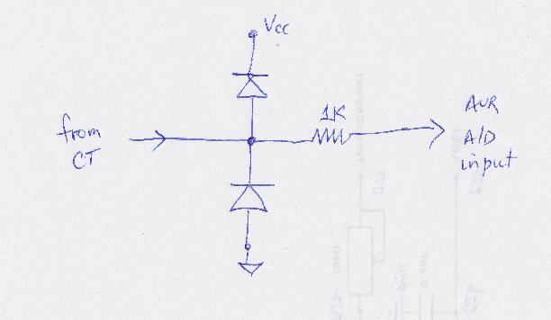

A few days ago, I posted a Mk2 Router sketch for use with the emonTx V3.2. The V3.2 platform has the RFu sub-assembly which includes both the Atmel processor and an RFM12B RF module.
This latest version of the Mk2 Router sketch is for use on the emonTx V3.4 platform. The V3.4 platform has the Atmel processor mounted directly on the PCB along with the more powerful RFM69CW RF module.
Much of the description for the V3.2-based application at http://openenergymonitor.org/emon/node/10171 is also relevant to this later thread. Only the differences between these two applications are described here.
Hardware
Because the RFM69CW takes more power when in the active state, the V3.4 platform is unable to drive an output stage without an additional DC supply being provided. This can be either via the USB power connection, or via the Serial port.
When the additional source of DC power is available, there is no need to use the low power output stage as described for the emonTx V3 at building a Mk2 PV Router . The standard circuit, as shown for the emonTx V2, will be fine.
Software
Because the two RF modules use different libraries, the sketch for the V3.4 platform needs to #include <Jeelib.h> rather than <RFu_Jeelib.h>. Also, the line #define RF_COMPAT 1 needs to be included.
Because the two RF libraries use different port allocations, element 4 of the terminal strip is Digital 3 for the V3.4 platform rather than Digital 2. This alternative allocation needs to be made near the start of the sketch.
Testing
A similar test sequence has been run for the V3.4 platform as for the V3.2 one. A full description of the test sequence may be found in the attached results file. Towards the end of the file, the additional source of 5V DC was removed, and the processor can be seen to reset repeatedly.
Although a programming board was present via the Serial port, the two power lines were not connected. This can hopefully be seen in one of the photos.
General
As with all of my "Mk2" code, this sketch measures continuously. If the Router's functionality is not required, this sketch can be used on the emonTx V3.4 as a simple continuous monitor for real power, temperature and RMS voltage. In this case, no additional DC supply would be needed.
Re: Using an emonTx V3.4 as a Mk2 PV Router
In the post above, Robin states:
"If the Router's functionality is not required, this sketch can be used on the emonTx V3.4 as a simple continuous monitor for real power, temperature and RMS voltage. In this case, no additional DC supply would be needed."
Having quickly looked at the power supply calculations for the emonTx V3, that might not be true over the full range of possible supply voltages, especially if some or all of the power supply components are at the "worst case" end of their manufacturing tolerances.
If difficulties are experienced, it might be possible to alleviate them and restore correct operation by reducing the current consumption of the RFM69CW module. This can be done by turning down the transmitter power. If that is not acceptable, then an independent 5 V supply of adequate rating should be provided.
Re: Using an emonTx V3.4 as a Mk2 PV Router
When using emonTx V3.4 as a Mk2 Router is it safe to use the high sensitivity CT4 to measure grid current when this input should not exceed 4.5kw.
Re: Using an emonTx V3.4 as a Mk2 PV Router
The rating of Input 4 depends on your system voltage. It is only 4.5 kW on a 240 V supply, or a fraction over 19 A given a good sine wave. (If your current wave is 'peaky', the maximum rms current could be significantly less.) You are unlikely to damage either the CT or the input of the emonTx if the current exceeds this, but once the input clips, all accuracy has gone.
Re: Using an emonTx V3.4 as a Mk2 PV Router
is it safe to use the high sensitivity CT4 to measure grid current when this input should not exceed 4.5kw.
As I understand it, the 4.5 kW value is determined by the value of the burden resistor with is fitted to the CT4 channel as standard (120 ohms). I assembled a 3.3V board of my own today with that same value of burden resistor and found that the maximum input range was approx 4.8 kW. Via an extension lead, my 2kW heater could well be taking less power than its rated value, so maybe the true maximum is closer to 4.5 kW as printed on the emonTx V3.4
For the purpose of diverting surplus power, the sensitivity of the 'grid' sensor should be as high as possible. If whole house consumption is also required, it may be best to use one of the other channels for this. With its higher-valued burden, CT4 would provide accurate measurements for diversion purposes, while the 22R channel would given less accurate data over a wider range for datalogging.
For my own diverter units, I fit a pair of 1N4007 protection diodes at the processor's input, but these may not be necessary. For much of the last year, a standard emonTx V2 has been doing sterling service in our garage, with nothing to supplement the processor's internal protection. When our 8kW electric shower is turned on, the signal that the ADC sees will just be a max-amplitude square wave. No harm has ever befallen the system, it always recovers in true Tom & Jerry style.
Re: Using an emonTx V3.4 as a Mk2 PV Router
For my own diverter units, I fit a pair of 1N4007 protection diodes at the processor's input,
By the time they switch on, it may be too late for the internal diodes. The internal diodes clamp at Vcc+0.5V and GND-0.5V and are good for about 1mA. I think the later emonTxs use a 1K series resistor for protection.
Re: Using an emonTx V3.4 as a Mk2 PV Router
Yes, the V3.4 does have a series 1 kΩ resistor for exactly this reason, and the internal diodes are good for a lot more than 1 mA - 20 mA from memory, without looking at the data sheet. The 100 A YHDC has internal zeners that clip at about 23 V, so whilst not totally bullet-proof, the input should survive most abuse thrown at it.
Re: Using an emonTx V3.4 as a Mk2 PV Router
Thanks for your reply. I have 240v (sometimes higher) supply, My concern is overloading the 120R burden. OpenEneryMonitor-Wiki calculations say the max power the 120R burden will need to dissipate is 867mW ?. I think a 0.25W resistor has been used.
Re: Using an emonTx V3.4 as a Mk2 PV Router
and the internal diodes are good for a lot more than 1 mA - 20 mA from memory, without looking at the data sheet.
I've never been able to find that in the datasheet. Do you know what it's listed as? The source for my 1mA number is AVR182, which states:
... It is not recommended that the clamping diodes are conducting more than maximum 1 mA... The clamping diodes are able to handle spikes for a short period of time but not surges. The application note will not go into how to protect against surges, but simply recommend implementing protection against surges in the design.
I guess the fact that it's an AC signal helps with the "short period of time". It's at least going to go to zero every 10 msecs, but that application note is written with an AC signal in mind.
Re: Using an emonTx V3.4 as a Mk2 PV Router
My concern is overloading the 120R burden. OpenEneryMonitor-Wiki calculations say the max power the 120R burden will need to dissipate is 867mW ?. I think a 0.25W resistor has been used.
The standard CT has a turns ratio of 2000, so if 100A is flowing in the primary there will be 50mA in the secondary. When flowing through a 120R burden, I think this will dissipate 0.3 Watts. I normally fit a 0.25W 150R burden, so it would indeed be overloaded under such continuous conditions.
Re: Using an emonTx V3.4 as a Mk2 PV Router
"I've never been able to find that in the datasheet. Do you know what it's listed as?"
Section 28.1 Absolute maximum ratings. And it's 40 mA, not 20.
The note says "Exposure to absolute maximum rating conditions for extended periods may affect device reliability." [Translation: It cooks.] but as the measurement is meaningless when this is happening, I don't see that as a significant limitation.
Re: Using an emonTx V3.4 as a Mk2 PV Router
Design calculations for CT bias resistors can be found at:-
http://wiki.openenergymonitor.org/index.php?title=EmonTx_V3#Flashing_Pre...
If CT-1 is used instead of CT-4, can calipso-rae's excellent sketch still be used by just changing the allocation of analog pins.
Re: Using an emonTx V3.4 as a Mk2 PV Router
Section 28.1 Absolute maximum ratings. And it's 40 mA, not 20.
I think that's an entirely different parameter from what we're discussing here. That 40mA is the absolute limit on how much current you can suck while it's trying to maintain a '1' on the output, or how much it can sink while it's trying to maintain a '0'. That pathway doesn't involve the internal protection diodes at all, but rather the very beefy GPIO drivers. The only contribution to the discussion I can find in the datasheet is max Voltage on any pin: Vcc+0.5V.
AVR182 leaks out a bit more detail by telling you to never exceed 1mA through those protection diodes (spikes above that are ok, surges are not). Something like the attached might do what you need. By the time 1mA is flowing through one of their internal protection diodes (perfectly legal according to AVR182), there'll be a full volt across the 1K series resistor, which should be enough to turn on those beefy external diodes well in advance of trouble.

Re: Using an emonTx V3.4 as a Mk2 PV Router
"I think that's an entirely different parameter from what we're discussing here. That 40mA is the absolute limit on how much current you can suck while it's trying to maintain a '1' on the output, or how much it can sink while it's trying to maintain a '0'. "
What do you make of Note 3.1: "The sum of all I/O, for ports C0 - C5, ADC7, ADC6 should not exceed 100 mA." To me, that infers that the ADC ports are included. Either way, the data sheet is unclear. But as far as I know (and I think I can include Glyn), no-one has ever blown up an ADC input, even on the V2 that has absolutely no protection outside the processor, other than the impedance of the bias supply.
Re: Using an emonTx V3.4 as a Mk2 PV Router
My guess is that they did what they always do when writing those footnotes: they gathered up the names of all the pins that share some internal structure (or a GND pin) and then declared that the sum of all currents through those pins must not exceed the current limits of that shared structure, without much regard for whether it was even possible for such a pin to source or sink any current. Those ADC6 and ADC7 pins are quite unusual for AVR devices. On all the AVR devices I've used, all ADC pins can also be used a GPIO pins. So I can forgive them for not stopping to think that ADC6 and ADC7 weren't candidates for contributing to the total current limits in that sub-section. Maybe they deliberately left them in for completeness. Certainly their inclusion doesn't make the list wrong. I think your inference that because of their inclusion, you can pump 40mA down them, is fairly bold.
the data sheet is unclear
Well the one thing it is clear on is that you must never exceed Vcc+0.5V. It seems to me it would be very easy to calculate or measure the primary current at which that happens on various emonTx input channels, and then tell people not to exceed it... complete with the usual warnings about non-sinusoidal current signals, and Ipeak etc. etc.
Now, when it comes to what happens as you do approach that Vcc+0.5V limit, the only definitive data I can find from Atmel is AVR182, and it is pretty clear (quoted above in bold). I'd certainly put more weight in AVR182, then I would in them including a couple of unusual ADC pins in a group current rule. I guess we could quibble over what's a spike and what's a surge, but I suspect we'd all agree that if someone's ADC input is attempting to exceed Vcc+0.5V / GND-0.5V (and sourcing more than 1mA while it does) for a significant part of each 10msec half-cycle, for a very extended number of half-cycles, then it's more surge than spike, and not within the limits required by AVR182. You certainly don't want it banging past those limits for as long as it takes to cook your dinner.
Re: Using an emonTx V3.4 as a Mk2 PV Router
If CT-1 is used instead of CT-4, can calipso-rae's excellent sketch still be used by just changing the allocation of analog pins.
With the 22R burden for CT1, the sketch will still work and the burden should never be overloaded. However, with such a low sensitivity, accuracy will be somewhat compromised. When no current is flowing in a test rig, a 22R channel can easily indicate several Watts of 'virtual' real power because each step of the ADC is so large. In a real life situation, where there will always be some activity at the CT, the effects of randomization will no doubt help to reduce this source of error.
The prime goal of the Router is to mimic the supply meter so that it can do something useful with any surplus power before penalties are applied. Using the full range of the ADC seems a better approach than just the bottom tenth of it. But having CT1 for the grid sensor may give acceptable results too. Using CT4, but with an appropriately selected burden (e.g. 39R or 56R) may be the best approach of all.
Re: Using an emonTx V3.4 as a Mk2 PV Router
It's a pity the burden resistors are surface mount, makes them harder to change, for me anyway,. The 4 burden resistors fitted to the board are much bigger than all the other resistors, I wonder if they have a higher power rating than the 0.25w mentioned in the calculations. I think it would be easy to add a parallel resistor to the CT4 socket pins on the underside of the circuit boad.
Re: Using an emonTx V3.4 as a Mk2 PV Router
"It's a pity the burden resistors are surface mount, makes them harder to change, for me anyway,"
Maybe there is a another option, Because of the parallel through-hole burden resistor provision to fit a "replacement" burden if you remove the existing SMT. It is possible to "desensitize" CT4 to the same range of CT1 to CT3 by adding a 27R resistor in parallel to the 120R SMT to give you 22R.
This method could also be used to select a intermediate range eg adding a 200R in parallel with the 120R will give you 75R, the range of the input would be around the midpoint between CT4 and CT1's range. This will also off-load some of the heat dissipation in the process.
You will need to accept a value "near" your target due to available component values but to achieve 39R you could need around 58R, and for 56R you need around 105R
The calibration figures would obviously need recalculating using the actual resistor values used.
http://www.sengpielaudio.com/calculator-paralresist.htm
Paul
Re: Using an emonTx V3.4 as a Mk2 PV Router
"I think it would be easy to add a parallel resistor to the CT4 socket pins on the underside of the circuit boad. "
It's even easier to add it to the top of the board - there are holes ready for it, on all 4 channels.
Re: Using an emonTx V3.4 as a Mk2 PV Router
I've used burden values of 39R or 56R to provide a workable compromise between maximum range and acceptable sensitivity. The approximate range for several burden values are given on my main PCB page:
If whole-house datalogging is required, the value of R6 will need to be reduced:
R6 = 56R will allow measurements of up to approximately 10 kW
R6 = 47R will allow measurements of up to approximately 12 kW
R6 = 39R will allow measurements of up to approximately 14 kW
NB. These burden resister values are for when the processor is operated at 3.3 V. If operated at 5V, these ranges are increased by approximately 50%.
I've not tried going any lower than 39R. With a standard type of supply meter, the Router's performance may be perfectly acceptable. But with a less tolerant type of meter, any inaccuracy would be likely to lead to (albeit small) cost penalties.
Re: Using an emonTx V3.4 as a Mk2 PV Router
My grid fuse is 80A. With 80A flowing in the CT primary there will be 40mA in the secondary.this gives 0.192 Watts to be dissipated by the 120R burden. So It looks as if it can't be overloaded.
Re: Using an emonTx V3.4 as a Mk2 PV Router
Diverted Power
If you have a load of say 2kw connected to the system, You could count the number of times the triac is fired, send this to emoncms and calculate the amount of power diverted.
eg with a 2kw load, over 250 mains cycles or 5 seconds (as used by the sketch) you get 2000/250=8 watts per per trigger. If the load is on for 50% during this period then you will fire the triac 125 times.
Giving 125 x 8 = 1000W. diverted. in 5 sec.
Re: Using an emonTx V3.4 as a Mk2 PV Router
That is the technique used by MartinR in his PLL diverter, but it fails if your load is thermostatically controlled. Then, it gives you the energy (not power) available for diversion, not the actual energy diverted—the discrepancy being of course the current not consumed when the thermostat is open.
Robin uses a second smaller ring CT to measure the actual diverted current and hence the power/energy diverted.
[MartinR's technique worked for him because he also measured cylinder temperature and used that to override the diversion logic, so his thermostat functioned solely as a safety backup.]
Re: Using an emonTx V3.4 as a Mk2 PV Router
Yes, I see what you mean, It's not easy to put a CT on my diverted power wiring but I do have one measuring the solar power on CT1 as well as CT4 for grid. I have inserted a condition in the sketch that sets the number of triggers (for data logging) to zero if the number of triggers = 250 (ie full power to heater) and solar - grid < 2000. (Rating of heater)
if (trigs == 250 && sumP_CT1 - sumP_grid < 2000) trigs=0;
That appears to work.
Re: Using an emonTx V3.4 as a Mk2 PV Router
with a 2kw load, over 250 mains cycles or 5 seconds (as used by the sketch) you get 2000/250=8 watts per per trigger.
I think you mean 2000/ 50 = 40 Joules per mains cycle, because 2000 Joules of energy are consumed every second.
If the load is on for 50% during this period then you will fire the triac 125 times.
The triac is actually fired twice per mains cycle - once for each half - but the Mk2's logic only controls it in whole cycles.
Giving 125 x 8 = 1000W. diverted. in 5 sec.
If the load is on for 50% of the time, then over a 5-second period, it will be active for 125 mains cycles. Each 'on' cycle contributes 40 Joules, so the total energy consumed during that 5-second period will be 5000 Joules, which is 1000 J/s or 1000 Watts.
Whether your electricity meter will record (penalise) this type of consumption depends on how rapidly the load is cycled. In "normal" mode with 50% power available, the load will probably be on for two mains cycles then off for two mains cycles giving an cycle frequency of approx 12.5 Hz. Anti-flicker mode reduces the rate of switching but may no longer be ignored by the supply meter.
Re: Using an emonTx V3.4 as a Mk2 PV Router
I haven't changed anything relating to the operation of the Mk2's logic that controls the triac. If the electricity meter penalises the use of Anti-flicker mode, it was doing it before I made changes to the sketch.
All I'm doing is changing the data logging info. sent to emoncms. Sending a count of triac triggers to emoncms (Instead of measuring diverted power and sending it) and using it to display and record diverted power by multiplying this feed by 8.
When the heater cut's out on it's thermostat, this can be detected in the sketch and the value for triggers sent to emoncms made zero. So recording no Diverted power. The triac will still be being fired of course.
Re: Using an emonTx V3.4 as a Mk2 PV Router
Norman, your system for detecting that the stat has opened sounds fine to me. An alternative approach would be to check when the energy bucket is overflowing. If the bucket's level ever has to be trimmed to its maximum value (3600 Joules), that presumably means that your load is consuming no power so you can simply ignore that mains cycle for counting purposes.
The point of my reply was to correct your sums for energy and power. It's all too easy to get these two parameters confused; we've all done it. Strictly speaking, the Mk2 Router diverts surplus energy rather than surplus power. The control system is entirely reactive. When the energy state becomes too high, a burst of energy is diverted to the load.
Other systems which feature "proportional control" are predictive rather than reactive. That kind of system determines the amount of surplus power over a certain period and activates the load at an appropriate rate. Such systems can be hard pressed to keep up with rapidly changing conditions. Several people have told me that their alternative types of diverter are slow to react. Some commercial diverters include a small bias towards export in order to avoid over-consumption when conditions change. The Mk2 design has no such difficulty.
Re: Using an emonTx V3.4 as a Mk2 PV Router
Thanks Robin, I stand corrected. I have been trying to understand your Interrupt Service Routine, I can see how it works after the 1st pass but don't understand what is happening when it starts. The 1st raw sample in (case 0) get's a voltage sample then puts diverted (CT3) analog pin to be read. but your notes say grid (CT4) is underway. Where did it get this from?.
I think it will get it from CASE 4 after the 1st pass.
Re: Using an emonTx V3.4 as a Mk2 PV Router
your notes say grid (CT4) is underway. Where did it get this from?.
Norman, the ISR follows a 5-way sequence under the control of the 'static' variable, sample_index. During the final stage which is "case 4:", sample_index is set to 0 in readiness for next time around. Also during that stage, the "next" ADC conversion is set to the grid sensor which is CT4. That conversion will start as soon as the one which is already under way (for Voltage) has finished. By the time that the ISR gets to processing the data for voltage, the conversion for grid (CT4) has already started. There are other ways of operating the ADC, but this method is the fastest that I know of.
If I've got it right, three elements in the ISR should follow the same sequence: Voltage, CT4, CT3, CT2 and CT1:
- the channel that the latest ADC result is from;
- the ADC channel which is to be set up next
- the conversion which is already under way (for info only)
These three sequences all go around in the same order, but start at different places. It's actually easier to see what's going on when there are more stages. When there are just two stages, it can take a while to work out what's happening. All credit to Jörg Becker for this interrupt-based kernel.
Re: Using an emonTx V3.4 as a Mk2 PV Router
I think the first round of samples is a bit of a muddle but, in reality, does it matter? You're weighing the effect of one sample being wrong out of 2500 roughly in the first second of operation. The inaccuracy that introduces in the first mains cycle is probably comparable with the other errors that are present, in the first second it is quite insignificant.
Re: Using an emonTx V3.4 as a Mk2 PV Router
I've probably never checked exactly what happens during the first 0.5 milliseconds of the ADC's operation (520 us actually), but the system soon settles down. No data from the ADC is used for serious purposes for the first few seconds, only for determining the boundaries of each mains cycle.
Re: Using an emonTx V3.4 as a Mk2 PV Router
On another thread, CidiRome has raised the interesting possibility that the processing of certain parts of this code may not be completed within the 104 us which is available. If this were to happen, ADC samples could be overwritten before they have been processed.
To investigate whether this is ever happening, I've added a simple checker mechanism to this code. A boolean flag is set when each new ADC sample appears, and cleared when the data has been processed. If the next ADC sample ever appears before the flag has been cleared, a "failure tally" is incremented. Every five seconds, a copy of this tally is displayed by the 'main' code at the Serial port via the existing datalogging mechanism.
With the expected number of failures being 0, I was delighted to see this value at the Serial port:
----
Watts@CT4(grid):0, CT3:1, CT2:1, CT1:1, Wh@CT3:0, Vrms:305.9, temp:300.0, min#ofSS/MC:38, #ofSS:9609, #of timingFailures0
Watts@CT4(grid):0, CT3:0, CT2:0, CT1:0, Wh@CT3:0, Vrms:243.4, temp:300.0, min#ofSS/MC:38, #ofSS:9609, #of timingFailures0
Watts@CT4(grid):0, CT3:0, CT2:0, CT1:0, Wh@CT3:0, Vrms:244.0, temp:300.0, min#ofSS/MC:38, #ofSS:9607, #of timingFailures0
Watts@CT4(grid):0, CT3:0, CT2:0, CT1:0, Wh@CT3:0, Vrms:242.7, temp:300.0, min#ofSS/MC:38, #ofSS:9607, #of timingFailures0
If one of the five lines which clears the flag is commented out, I would expect to see one failure being reported every data set. Each data set takes approx 5 * 104 us, so within a 5 second period the expected number of data sets will be 5,000,000 / (5 * 104) = 9615. This figure is just as I'm seeing in practice, as below:
----
Watts@CT4(grid):0, CT3:1, CT2:1, CT1:1, Wh@CT3:0, Vrms:305.3, temp:300.0, min#ofSS/MC:38, #ofSS:9620, #of timingFailures15296
Watts@CT4(grid):0, CT3:0, CT2:0, CT1:0, Wh@CT3:0, Vrms:243.4, temp:300.0, min#ofSS/MC:38, #ofSS:9620, #of timingFailures9620
Watts@CT4(grid):0, CT3:0, CT2:0, CT1:0, Wh@CT3:0, Vrms:242.8, temp:300.0, min#ofSS/MC:38, #ofSS:9622, #of timingFailures9622
Watts@CT4(grid):0, CT3:0, CT2:0, CT1:0, Wh@CT3:0, Vrms:243.1, temp:300.0, min#ofSS/MC:38, #ofSS:9622, #of timingFailures9622
From these results, it appears that my code as posted is doing all of its processing within the available time period. The use of all-integer rather than floating-point maths appears to be doing a good job. This code includes an integer-based phaseCal calculation for each of the four current-sensing channels. In the revised code, the error in this logic that was highlighted recently by Per-Ake (PBudmark) has been fixed by re-locating one of the lines in the "voltage" section of the ISR (case 0).
The revised code is attached. All input welcome.
Re: Using an emonTx V3.4 as a Mk2 PV Router
On reflection, I doubt whether the timeTrial sketch that I posted earlier today is capable of detecting if processing within the ISR takes too long. Assuming that each iteration of the ISR will always run its course, the boolean flag will always have been cleared before its state is checked, so the test will never fail.
To check the time taken for a (long / int) calculation, I devised a simple sketch which loops around 100,000 times. On each loop, it checks millis() and uses this value to 'seed' a dummy calculation of this type. The resulting dummy value is accumulated and printed out at the end of the run along with the time per loop in microseconds.
For just the loop structure, I'm seeing 1.6 us / loop
If the dummy value is never printed out, the result is identical. This tells me that the optimiser is smart enough to recognise that this value will never be used so need not be calculated.
If the dummy value is printed out, I'm seeing 38 us / loop, so I deduce that the (long / int) calculation is taking around 36 us. This is not far from the value of "about 40us" that CidiRome reported earlier.
To demonstrate whether the ISR workload in my free-running "CM" code is ever exceeding its permitted duration is not straightforward. Any ideas as to how this could be done will be gratefully received. My gut feeling is that this code is working OK because I've not seen anything to make me suspect that it isn't.
Re: Using an emonTx V3.4 as a Mk2 PV Router
You could check at the end of your ISR to see if a new conversion has completed. A positive result wouldn't necessarily mean that you've lost data, but it would at least indicate that you're sometimes slipping behind and have the potential to lose some. A negative result would mean you always complete with time to spare.
Something like:
volatile bool ADC_ISR_lagged; volatile uint32_t ADC_ISR_lagcount; ... if (ADCSRA & _BV(ADIF)) { // If new conversion pending ADC_ISR_lagged = true; // note that we're lagging ADC_ISR_lagcount++; }Re: Using an emonTx V3.4 as a Mk2 PV Router
Hi dBC, CidiRome, I'm pleased to see a worldwide interest in checking the behaviour of my revised ISR structure - just as it should be for these open-source ventures.
For my part, I've devised a simple tool which checks the duration of each ISR visit and records the longest value. This occurs in loop() which is doing nothing other than this task. After a pre-set period, it dumps the result to Serial, and then starts over.
This tool is ISR_duration_checker.ino, as attached. The ADC is free-running with an ISR that does a (long / int) calculation every time. This results in an overall delay of ~64 us which is well within the 104 us threshold. Every tenth visit, it does some extra work which takes another ~40 us. The consequence of this is that pairs of ADC-done interrupts occasionally overlap. When this occurs, the 'main' code records this back-to-back activity as a single longer ISR visit because micros() is not executed between them. The results file, resultsFor_overlappingISRs_1.txt shows this effect nicely.
I then took a clean version of my emonTxV3_4_as_Mk2Router sketch and replaced its loop() with the one from the above checker tool. The resulting code is attached as newISR_timingChecks.ino. Having made this change, everything will be happening in the ISR just as before, but no "copyOf" data is being processed by the 'main' code. By getting the code in loop() to display its result every 13 seconds, the 5-second datalogging activity within the ISR should always be caught.
The resulting display is attached as ISR_duration_results_1.txt with an extract shown below. This indicates to me that the code I have tested today is working OK, and that no rescheduling of the ISR workload will be necessary..
>>free RAM = 1141
----
max duration was 96 us
max duration was 96 us
max duration was 100 us
max duration was 96 us
max duration was 96 us
max duration was 96 us
max duration was 100 us
max duration was 96 us
max duration was 104 us
max duration was 104 us
max duration was 96 us
The code that I was running for this test was posted by me last year. It provides a "Mk2 PV Router" control activity within a 4-channel "continuous monitoring" environment for real power with individual powerCal and phaseCal adjustments for each channel. All of this work takes place within the ISR. Support is provided in the 'main' code for RF datalogging, temperature measurements and Serial. If this code is modified for any other purpose, care should be taken not to increase the ISR workload such that timing problems are encountered.
Re: Using an emonTx V3.4 as a Mk2 PV Router
A couple of days ago, dBC suggested a way of checking if the ISR workload was ever exceeding the time that is available. Having read up about ADIF in the datasheet, this does seem an excellent idea. What's more, it's working perfectly in practice too!
The attached tool ISR_lagging_checker will run on any Atmega 328 platform. It has a free-running ISR in which workload is simulated using delayMicroseconds(). As posted, each visit to the ISR has a 40 us delay, and every tenth one has an additional delay of 65 us. With the cycle time of the free-running ISR being ~104 us, I would expect to see an instance of lagging at every tenth visit. Over a 3 second period, there will be 3,000,000 / 104 = 28846 visits, one tenth of which is 2884. The value that I'm consistently seeing on the screen is 2622. Not sure why there is this discrepancy. The displayed value did not change when I increased the extra delay from 65 us to 80 us.
I then ported this mechanism to a clean copy of my emonTxV3_4_as_Mk2Router sketch. When this was run on an emonTx V3.4, the number of instances of lagging was zero. When a fixed delay of 10 us was introduced to every ISR visit, there were still no such instances. When I increased the delay to 20 us, an effect started to be seen.
With a 6 second recording period, and a datalogging event occurring every 5 seconds, it is evident that precisely one instance of lag is being at each datalogging event:
>>free RAM = 1159
----
0
1
2
1
1
1
1
2
1
1
1
1
2
1
1
1
1
2
1
To summarise: All visits to the ISR are completing with at least 10 us to spare. Once per datalog period, there is a heavyweight visit where there is less than 20 us to spare, but running over into the next visit (which will always be a short one) would not cause any problem.
The technique suggested by dBC, as demonstrated above, would seem to be an excellent way of verifying the performance of any similar code before it is released for general use. Trans-world co-operation of this nature is surely open-source at its best.
Re: Using an emonTx V3.4 as a Mk2 PV Router
28846 visits, one tenth of which is 2884. The value that I'm consistently seeing on the screen is 2622. Not sure why there is this discrepancy.
28846 / 11 is 2622 and...
counterForExtraDelay++; if (counterForExtraDelay > 10) { // extra 'work' for the Nth visit onlyRe: Using an emonTx V3.4 as a Mk2 PV Router
Because ADC_ISR_lagcount is a multi-byte variable, you can't access it reliably while there's a chance the ISR may be manipulating it (a 32-bit increment is not atomic on an 8-bit AVR). But you can use the single-byte ADC_ISR_lagged to decide whether it's worth going to the effort. So maybe something like this:
void loop() { uint32_t my_lagcount; if (ADC_ISR_lagged) { cli(); my_lagcount = ADC_ISR_lagcount; ADC_ISR_lagcount = 0; ADC_ISR_lagged = false; sei(); } else my_lagcount = 0; Serial.println (my_lagcount); delay(3000); }I made the same mistake in DataLogger.ino in this thread: http://openenergymonitor.org/emon/node/12030 which I'll fix.
Re: Using an emonTx V3.4 as a Mk2 PV Router
Doh! How many more times will I use '>' when it should have been ">=".
I'll have to think a bit more about the other one; I wondered why that boolean was in in the code fragment you provided, There's a lot of new ground for me to cover here. Thanks for the guidance. I trust that it doesn't affect the conclusion that my code as posted appears to be OK.
Re: Using an emonTx V3.4 as a Mk2 PV Router
You're welcome. And I agree, your conclusion remains sound. You'd have to be pretty unlucky to hit the timing window I pointed out. If you did, all you'd see is a one-off very strange value for lagcount.
A lot of people confuse volatility with atomicity (is that a word?). But they're two separate issues, each with their own solution. Declaring something volatile will ensure the compiler always accesses it at its memory location, rather than using the local registers that it loaded it into just a few lines of code earlier. In the case of read access say, every time the compiler sees ADC_ISR_lagcount it will generate the necessary code to go and re-read it from memory. For non-volatile variables it usually just does that on the first access in a function, then does all it's manipulations on the register copy, and if any of them were writes, writes the register copy back out to memory before returning.
Whether or not an operation is atomic comes down to what the CPU can do in a single instruction. ISRs don't interrupt instructions, they only interrupt between instructions. Incrementing or reading a 32-bit variable is a single instruction on any modern proper CPU so there's generally no hazard. But on a little 8-bit micro, you have to consider the generated code.
ADC_ISR_lagged = true; // note that we're lagging
ADC_ISR_lagcount++; // count the lags
generates all of this:
39a: 81 e0 ldi r24, 0x01 ; 1 39c: 80 93 35 02 sts 0x0235, r24 3a0: 80 91 31 02 lds r24, 0x0231 3a4: 90 91 32 02 lds r25, 0x0232 3a8: a0 91 33 02 lds r26, 0x0233 3ac: b0 91 34 02 lds r27, 0x0234 3b0: 01 96 adiw r24, 0x01 ; 1 3b2: a1 1d adc r26, r1 3b4: b1 1d adc r27, r1 3b6: 80 93 31 02 sts 0x0231, r24 3ba: 90 93 32 02 sts 0x0232, r25 3be: a0 93 33 02 sts 0x0233, r26 3c2: b0 93 34 02 sts 0x0234, r27And more importantly I guess, when you go to access that variable in the main loop:
my_lagcount = ADC_ISR_lagcount;
ADC_ISR_lagcount = 0;
generates:
It has to fetch ADC_ISR_lagcount out of memory byte by byte and then zero it out byte by byte (r1 contains 0). So now you can imagine what happens if the ISR code fires in between any of these 8 instructions. You've picked up some of the 4 bytes before the ISR has changed them all (assuming a carry propagates all the way through) and the rest after the ISR has changed them all. So you end up with an inconsistent 32-bit value, half of it loaded from one era, and the other half from another.
So accessing volatile multi-byte variables needs to be protected from interruption. You can either use the macros defined in <atomic.h>, or you can simply wrap your access with cli(); sei(); pairs.
Re: Using an emonTx V3.4 as a Mk2 PV Router
Are the statements cli() and sei() having the same effect as noInterrupts() and interrupts(), as in this example from the Arduino Reference page:
void loop() { noInterrupts(); // critical, time-sensitive code here interrupts(); // other code here }Where would I be able find out more about these interesting constructs? (preferably is an easy going form that I can comprehend!)
Re: Using an emonTx V3.4 as a Mk2 PV Router
Are the statements cli() and sei() having the same effect as noInterrupts() and interrupts()
Yes, from Arduino.h:
I'm not sure why the Arduino folk decided to rename them.... perhaps to aid readability or portability to non-AVR platforms.
Re: Using an emonTx V3.4 as a Mk2 PV Router
I've attached a really simple sketch that demonstrates the atomic problem. The ADC-complete interrupt simply counts how many times it's run (and doesn't even bother to read the conversion result), so I'm using the ADC as a simple timer that ticks every 104 usecs. You might need to tweak start_adc() for your CPU type; just set it up however you usually set it up so it's in continuous sampling mode.
The main loop aggressively monitors the counter and screams if it ever goes backwards. If I've done the maths correctly that should only happen every 310 days (32-bit counter * 104 usecs). You get to choose whether the main loop accesses the counter atomically or not by whether or not you include the cli() / sei() pair:
// cli(); latest_ISR_count = ADC_ISR_count; // Needs protection from interrupts // sei();Without the protection, the complaints come screaming in....
Hello world
1FF -> 100 ?
BFF -> B00 ?
FFF -> F00 ?
19FF -> 1900 ?
always when there's a carry. The ISR changed ADC_ISR_count from 0x1ff to 0x200 right in the middle of that assignment statement above. The assignment statement fetched the three high order bytes before the interrupt, but before it could fetch the 4th (least significant) byte, the ISR fired and changed the bottom two bytes (because there was a carry). The ISR then returns, and the assignment statement completes by fetching the 4th byte, but it is inconsistent with the stale 3rd byte it picked up before the ISR.
It's a bit of an artificial example. The reason it shows up so reliably in this case is because the main loop is hammering so hard on the shared datastructures, it's pretty much guaranteed to be watching during a transition. In real life, the main loop is likely to be off doing other useful stuff most of the time, so the necessary conditions become much rarer (and harder to find when they do occur).
And of course cli()/sei() isn't the only way to solve it; it's just the ultimate brute-force way. Robin mentioned he uses a dataReady flag, and an agreement between the competing threads on who's allowed to write and who's allowed to read when. If you can arrange that, it has the big advantage that you're not disabling interrupts all the time.
Re: Using an emonTx V3.4 as a Mk2 PV Router
dBC: I've attached a really simple sketch that demonstrates the atomic problem.
... and it works really nicely, exactly as posted. Without the cli() and sei() pair in place, the complaints do indeed come screaming in, too fast to see. Pulling out the USB cable stopped it, not sure if there's a tidier way ...
Hello world
1FF -> 100 ?
2FF -> 200 ?
AFF -> A00 ?
EFF -> E00 ?
1AFF -> 1A00 ?
22FF -> 2200 ?
27FF -> 2700 ?
2AFF -> 2A00 ?
32FF -> 3200 ?
These 'failures' are occurring at slightly different moments for me, but the pattern on each run is exactly the same. Adding a one-off Serial.println() statement at the start of loop() causes the first such event not to occur, but all the others remain exactly as before. Because there is never any variation in what either of them is doing, the ISR and main code are presumably remaining in perfect synch. In the real world, the main code would be taking different paths on each run.
With the cli() and sei() in place, or noInterrupts() and interrupts(), the interaction between the ISR and main code operates perfectly. Nice demo dBC, thanks for sharing.